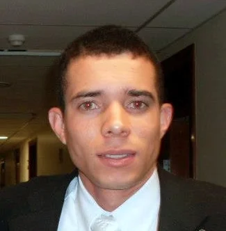

Personas
Jack
She is 25 years old. She is a swimming suit store manager. She holds a degree in Administration and she used to be the owner of a brand of kids rugs. She needs to know the weather for selling strategies in her current job since it is near the coast and deals with bathing suits.
Leo
He is 35 years old. He is a Mechanical Technition and has a certification in Mechanics and a degree in Industrial Production Manangement. He needs to be aware of the weather conditions since he does external visits in Fabrics and Great Companies in his comunity. to take care of their maintenance.